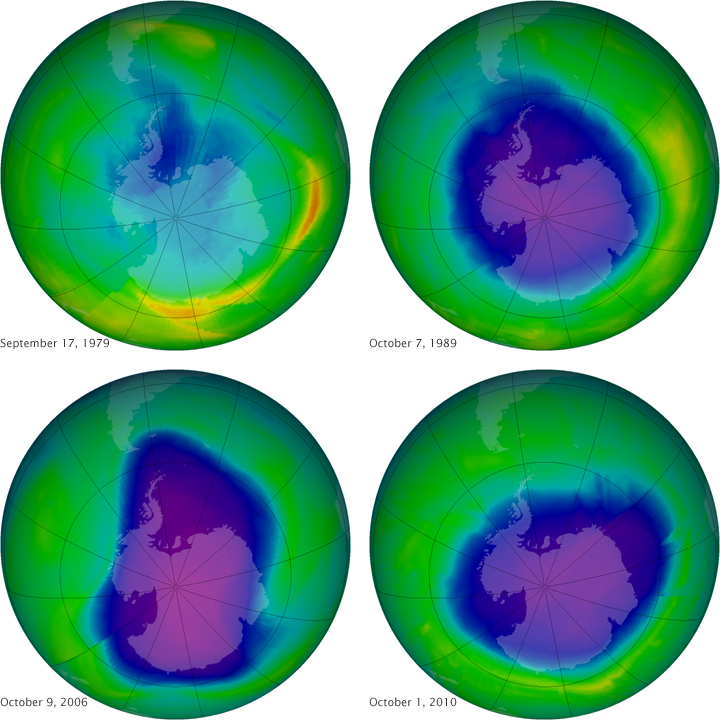

Photo: Robin George Andrews/Gizmodo
Coming Face 2 Face with Climate Change
In the past, the way the climate was being affected by humans was not widely recognised as a problem until the 1950s when the effect of CFCs, Fossil fuels and dirty industries to name a few become evident on the atmosphere and the climate, especially the Ozone layer. When this became evident, a huge effort to get rid of these contaminants was undertaken. All sorts of things had to be thrown away like fridges, aerosols, foams and solvents. The problem was thought to be fixed but greenhouse gas levels have been rising rapidly still.
In the 1960s, the first Climate Change Meeting was held, kicking off the real start to the efforts to reduce the worlds carbon emisiions. In the late 60s, analysis of deep sea core samples proved that the climate was very sensitive to changes, partially due to the water vapour in the atmosphere.
The 70s really brought people to terms with what could possibly happening and the first Earth Day was recognised. Serious droughts and famines were happening on a worse scale than in previous years, increasing concern about Cimate Change. A study in 1975/76 proved that CFC's were causing damage and degrading the Ozone layer, already creating a hole over New Zealand and Antarctica.
In the 2000's, the real threat of global warming and the greenhouse effect were realised by international corporations and the effects of it were starting to be seen. Sea level rises were detected by the melting polar ice caps. in 2005, and important treaty, the Kyoto treaty was signed by major nations to bind them on reducing global carbon emissions. Global Warming is realised to be casuing more impact faster than expected than anticipaited. Efforts are made as people become more conscious about the risk and effect of climate change on the earth.
Scientists claim that in a few years time, the damage to the earth will be irreversible. This has created a new generation of so called 'Eco Warrirors' who will need to be the ones coming Face to Face with the Climate Change reality.

Ozone Depreciation:
NASA